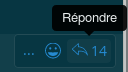

Bases de la messagerie #
Écrivez un message en utilisant la boîte de texte en bas de Mattermost. Appuyez sur ENTRÉE pour envoyer un message. Utilisez Majuscule + ENTRÉE pour créer une nouvelle ligne sans envoyer de message.
Répondez à un message en cliquant sur la flèche de réponse à côté du texte du message.

Notifiez vos coéquipiers quand c’est nécessaire en saisissant @pseudo
Formatez vos messages en utilisant Markdown, qui prend en charge la mise en forme du texte, les titres, les liens, les émoticônes, les blocs de code, les citations, les tableaux, les listes et les images sur la même ligne.
| Texte entré | Aperçu |
|---|---|
**gras** |
gras |
*italique* |
italique |
~~texte barré~~ |
|
[Discuter](https://discuter.pcet.link) |
Discuter |
 |
Joignez des fichiers en les glissant-déposant dans Mattermost ou en cliquant sur l’icône de pièce jointe à côté de la boîte de texte.
Pour des pièces jointes temporaires, préférez un service comme FILE ou recherchez d’autres alternatives sur le Wiki pour éviter de prendre inutilement de la place sur le serveur.